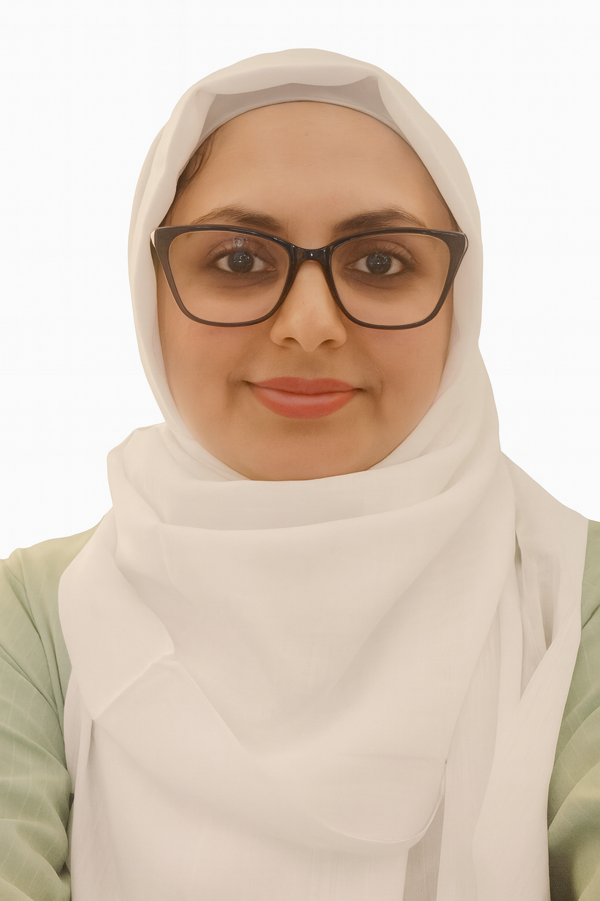

Profile
Systems research engineer/scientist and lecturer with experience across AI cloud-scale visual data systems, graph databases, video analytics, and scalable systems. Industry roles at Intel Labs and academic roles at San Francisco State University and Mutah University.
Professional & Research Experience
Systems Research Engineer/Scientist
05/2017 – 08/2024Intel Labs, Intel Corporation, USA
Key research areas: AI Cloud-scale visual data systems, graph database, video analytics, scalable systems.
Lecturer
05/2017 – 08/2024Department of Computer Science, San Francisco State University, USA
Assistant Professor
10/2015 – 10/2021Department of Computer Science, Mutah University, Jordan
Research Assistant
2010 – 2015Computer Graphics and HCI Group, Department of Computer Science, University of Kaiserslautern, Germany
Education
Ph.D. in Computer Engineering
2010 – 2015RPTU Rheinland-Pfälzische Technische Universität Kaiserslautern-Landau, Germany
Thesis: “Interactive Visual Support for Understanding the Structural and Behavioral Aspects of Embedded Systems”.
M.S. in Computer Networks (1st in class)
2005 – 2007Jordan University, Jordan
Thesis: “Applying Genetic Algorithms to Find the Best Stable Cluster in Ad Hoc Networks”.
B.S. in Computer Science (1st in class)
2001 – 2004Mutah University, Jordan
(4-year degree completed in 3 years)
Research Projects Participation
- VDMS — Visual Data Management Systems (Intel Labs)
- Little Fall — 3D video conference call (Intel Labs)
- SAF — Video streaming framework (Intel Labs, with Carnegie Mellon University)
- Scanner — Analyzing video at scale (Intel Labs with Stanford University)
- Video Curation — Run-time video query pipeline (Intel Labs, OR)
- Image analyser — Analyze large medical images (Intel Labs, OR)
- VIMETRIK — Visual Specification of Metrics (University of Kaiserslautern with Fraunhofer IESE), 2013–2014
- Visual-Computing Education — Master Program in Visual Computing, Colombia (Universidad de Los Andes; funded by DAAD), 2014–2018
- VIER4ES2 — Virtual and Augmented Reality for Maximum Safety and Reliability of Embedded Systems (University of Kaiserslautern with Fraunhofer IESE), 2012–2014
- UID4Mobile — Scalable User Interface Design for Mobile Applications (University of Kaiserslautern with Fraunhofer IESE), 2012–2013
Honors & Awards
- Best Paper Award, SIGRAD 2014 Conference — Gothenburg, Sweden (Apr 2014)
- Best Paper Award, PID-MAD 2013 Workshop — MobileHCI '13, Munich, Germany (Aug 2013)
- DFG Scholarship — German Research Foundation (May 2011)
- Mutah University Scholarship — Partial scholarship to support PhD studies (Jun 2009)
- King Abdullah II Scholarship for Distinct Students — Ministry of Education, Jordan (Oct 2005)
- Jordan Military Scholarship for Distinct Students — Mu'tah University (Oct 2001)
Publications
Journal Articles (peer-reviewed)
- Sujay Muramalla, Ragaad AlTarawneh, Shah Rukh Humayoun, Ricarda Moses, Sven Panis, and Achim Ebert. Radial vs. Rectangular: Evaluating Visualization Layout Impact on User Task Performance of Hierarchical Data. IJCSIS 12(2): 17–31, Dec 2017.
- Ragaad AlTarawneh and Shah Rukh Humayoun. Evolving Mobile Prototypes Towards the Best-suited Design and Interaction Schema using the Genetic Algorithm. IJMHCI 6(2): 1–10, 2014.
- Chaunte Lacewell, Nilesh Ahuja, Pablo Munoz, Parul Datta, Ragaad Altarawneh, Vui Seng Chua, Nilesh Jain, Omesh Tickoo, Ravi Iyer. E2E Visual Analytics: Achieving >10X Edge/Cloud Optimizations. IEEE NAS, 2021.
Book Chapters
- R. AlTarawaneh, P. Keller, A. Ebert. A General Introduction To Graph Visualization Techniques. IRTG 1131 Workshop 2011.
- R. AlTarawneh, M. Steiner, D. Taibi, S. R. Humayoun, P. Liggesmeyer. Does Visualization Speed up the Safety Analysis Process? LNCS 8696, 2014.
- R. AlTarawneh, J. Bauer, S. R. Humayoun, P. Keller, A. Ebert. The Reflection Layer Extension to the Stereoscopic Highlight Technique for Node-Link Diagrams. ISVC '13, LNCS 8034.
Conference Articles
- L. M. Aguilar, R. AlTarawneh, S. R. Humayoun. WebGraphViz: A WebGL-Based Interactive Graph Visualization Tool for Retail Analytics. EuroVis 2025, Luxembourg. (Accepted)
- J. Zapata, S. F. Haider, R. AlTarawneh, S. R. Humayoun. GraDVis: A Visualization Tool for a Visual Data Management System. EICS Companion ’24, Cagliari, Italy, 2024. https://doi.org/10.1145/3660515.3662833
- S. R. Humayoun, S. Zaidi, R. AlTarawneh. SamS-Vis: A Tool to Visualize Summary View Using Sampled Data. INTERACT 2023, LNCS 14145: 557–562.
- S. R. Humayoun, G. Abbas, R. AlTarawneh. Touch-behavioral Authentication on Smartphones using Machine Learning. IUI ’22 Companion, Helsinki, 2022.
- S. R. Humayoun, I. Mansour, R. AlTarawneh. TEVisE: Explore Evolution of Keywords' Relations in Tweet Data. INTERACT’21.
- S. R. Humayoun, S. M. Hasan, R. AlTarawneh, A. Ebert. Visualizing Software Hierarchy and Metrics Over Releases. AVI 2018.
- S. R. Humayoun, K. Bhambri, R. AlTarawneh. BiD-Chord: Extended Chord Diagram... AVI 2018.
- G. Abbas, S. R. Humayoun, R. AlTarawneh, A. Ebert. Simple Shape-based Touch Behavioral Biometrics... AVI 2018.
- S. R. Humayoun, S. Ardalan, R. AlTarawneh, A. Ebert. TExVis: Explore Twitter Data. EuroVis 2017.
- S. R. Humayoun, S. H. Ali, R. AlTarawneh, A. Ebert. Associations with Hierarchical Social Circles. EuroVis 2017.
- R. Moses, S. R. Humayoun, R. AlTarawneh, A. Ebert. Cognitive Load: Force-directed vs. Chord Layout. EuroVis 2017.
- S. R. Humayoun, P. Rath, R. Altarawneh, A. Ebert. Car/Ride Sharing Smartwatch Apps. BCS-HCI 2017.
- R. Altarawneh, A. Hassanat, S. R. Humayoun, M. Alkoshman. Educational Mobile App for Children in South Jordan. BCS-HCI 2017.
- R. AlTarawneh, S. R. Humayoun, A. Ebert. Can We Interpret the Depth? NordiCHI ’16.
- S. Muramalla, R. AlTarawneh, S. R. Humayoun, R. Moses, A. Ebert. Sunburst vs. Icicle. AC 2016.
- R. AlTarawneh, S. R. Humayoun, A. Ebert, P. Liggesmeyer. Failure Understanding in Embedded Systems. BCS-HCI 2016.
- S. R. Humayoun, H. Ezaiza, R. AlTarawneh, A. Ebert. Multi-Layered Chord Layout. AVI 2016.
- R. AlTarawneh, S. R. Humayoun. Enhanced Interactive Sunburst. AVI 2016.
- H. Ezaiza, S. R. Humayoun, R. AlTarawneh, A. Ebert. PerSoN-Vis. CHI'16 EA.
- S. R. Humayoun, Y. Dubinsky, R. AlTarawneh. Using IoTGolog to Formalize IoT Scenarios. IEEE WF-IoT 2015.
- S. R. Humayoun, J. Khan, S. M. Hasan, R. AlTarawneh, A. Ebert. Hi-AppV. ITS 2015.
- S. R. Humayoun, M. Sharf, R. AlTarawneh, A. Ebert, T. Catarci. ViZCom. ITS 2015.
- R. AlTarawneh, R. J. Ibraheem, S. R. Humayoun, A. Ebert. Position Patterns with Shared Tiled-Wall. ITS 2015.
- A. Islam, R. AlTarawneh, S. R. Humayoun, S. Baron, A. Ebert. ViQAP. LDAV 2015.
- R. AlTarawneh, S. R. Humayoun, J. Schultz, A. Ebert, P. Liggesmeyer. LayMan. ECSAW '15.
- R. AlTarawneh, S. R. Humayoun, A. Ebert. Visualizing Spatial/Non-Spatial Data Types. INTERACT 2015.
- R. AlTarawneh, S. R. Humayoun, A. Ebert. Variation in Stereoscopic Depth. 3DUI 2015.
- R. AlTarawneh, A. Griesser, J. Bauer, S. R. Humayoun, A. Ebert. 3DintEx. 3DUI 2014.
- R. AlTarawneh, J. Bauer, S. R. Humayoun, A. Ebert, P. Liggesmeyer. Safety Aspects in Embedded Systems. IUI Companion '14.
- R. AlTarawneh, J. Schultz, S. R. Humayoun. CluE. PacificVis 2014.
- R. AlTarawneh, S. R. Humayoun. Two-Perspective Visualization in CS Education. CSERC '13.
- R. AlTarawneh, J. Bauer, S. R. Humayoun, P. Keller, A. Ebert. Extended Stereoscopic Highlighting. CGIM 2013.
Workshops Articles
- R. AlTarawneh, S. R. Humayoun, A.-k. Al-Jaafreh. Towards Optimizing the Sunburst Visualization for Smart Mobile Devices. DIViM 2015 (INTERACT Adjunct).
- R. AlTararwneh, C. Strong, L. Remis, P. Muñoz, S. Addicam, S. Kambhatla. Navigating the visual fog: analyzing and managing visual data from edge to cloud. USENIX HotEdge '19.
Article at arXiv
- R. N. Jaber, R. AlTarawneh, S. R. Humayoun. Characterizing Pairs Collaboration in a Mobile-equipped Shared-Wall Display Supported Collaborative Setup. arXiv:1904.13364
Peer-reviewed Non-archival
- N. Mir*, R. AlTarawneh, S. R. Humayoun. Circles: Inter-Model Comparison of Multi-Classification Problems with High Number of Classes. IEEE VIS 2023. arXiv:2309.05672
- R. Moses, S. R. Humayoun, R. AlTarawneh, A. Ebert. Evaluating Cognitive Load: Force-directed Layout vs. Chord Layout. EuroVis Posters, 2017.
- L. Remis, V. Gupta-Cledat, C. Strong, R. Altarawneh. VDMS: Efficient Big-Visual-Data Access for ML Workloads. arXiv:1810.11832.
- R. AlTarawneh, J. Bauer, N. Menck, S. R. Humayoun, A. Ebert. assistME: A Collaborative Mobile Environment... MobilENG 2014 (CSD&M 2014), Paris. arXiv
- R. AlTarawneh, S. R. Humayoun. Evolving Prototypes Using the Genetic Algorithm. MobileHCI '13 Workshop: PID-MAD 2013.
- R. Altarawneh. Stereoscopic Visualization Techniques for Embedded System Graphs. Voices of VR.
Conference Activities
Organizing / Committees
- ACM IUI (Program Committee & Reviewer), 2020–2024
- 16th International Conference on Communication Systems and NETworkS (Demo co-chair), 2023
- USENIX HotEdge '20 (Program Committee), 2020
- Master Program in Visual Computing, Colombia — preparation/launch; lecturer, postdoc researcher, curriculum reviewer, workshops organizer, 2014–2017
- VIER4ES2 project, 2012–2014
- CSD&M for IoT Workshop (Program Committee), 2015
- USARE Workshop (Program Committee), 2017
- IFIP WG 13.7 DIVIM 2015 (Program Committee)
- IEEE & IFIP 2nd Int'l Workshop on Usability and Accessibility focused Requirements Engineering (USARE 2014) (Program Committee)
Reviewing
- ACM CHI – LBW 2019, 2022–2025; CHI 2014–2019
- ACM IUI 2022, 2024, 2025
- INTERACT 2019, 2021
- ACM VRST 2016, 2019
- CSCW 2015–2019
- IEEE InfoVis 2017, 2018; VAST 2010, 2018
- EuroVis 2018, 2019; PacificVis 2019
- IEEE VR 2018
- MobileHCI 2015–2019
- ICMI 2019; DIS 2018, 2019; MOBILESoft 2017, 2018; UIST 2015, 2016, 2019; NordiCHI 2016, 2018; AVI 2010, 2018
Journal Reviewing: Journal of Systems and Software; IEEE Software; Elsevier Information Systems.
Teaching Experience
| Course / Seminar | Dates | Role | Department / Institution | Location | Responsibilities |
|---|---|---|---|---|---|
| Master Seminars in Visualization & HCI | Summer 2024 | Lecturer | Dept. of Computer Science, San Francisco State University | CA, USA | Seminar supervision in HCI |
| Computer Graphics, Information Visualization | Fall 2015, Spring 2016 | Lecturer | Dept. of Computer Science, Mutah University | Jordan | Course development, teaching, exercises |
| AI Ethics | Spring 2021 | Lecturer | Dept. of Computer Science, Mutah University | Jordan | Course development, teaching, exercises |
| Computer Networks | Summer 2016 | Co-Instructor | Dept. of Computer Science, Mutah University | Jordan | Teaching, exercises |
| Object Oriented Programming | Spring 2020 | Lecturer | Mutah University | Jordan | Teaching, exercises |
| C++ Programming | Spring 2021 | Lecturer | Mutah University | Jordan | Teaching, exercises |
| Java Programming | Spring 2020 | Lecturer | Mutah University | Jordan | Teaching, exercises |
| Web Development Programming | Spring 2017 | Lecturer | Mutah University | Jordan | Teaching, exercises |
| InfoVis, Visual Analytics & HCI (2-day summer school) | July 2014 | Lecturer | Universidad Industrial de Santander | Colombia | Exercises |
| Operating Systems | Spring 2018 | Lecturer | Mutah University | Jordan | Teaching, exercises |
Supervising & Mentoring
| Year | Role | Student | Thesis Title | Institution |
|---|---|---|---|---|
| 2025 | Master thesis co-supervisor | Seham Ahmad | Designing and Developing a UI for LangChain Integrated with TileDB for large LLMs | San Francisco State University |
| 2025 | Master thesis co-supervisor | Luis Miguel Aguilar | Visualizing large graph database in Visual Data Management Systems | San Francisco State University |
| 2024 | Master thesis co-supervisor | Farhan Haider | Low-Compute Video Object Detection and Visualization Framework for Accuracy Analysis | San Francisco State University |
| 2024 | Master thesis co-supervisor | Jarrett Zapata | Design and Implementation of a Graph Visualization Tool for Intel Labs Video Database Management System | San Francisco State University |
| 2019 | Master thesis co-supervisor | Ghazanfar Abbas | Behavioral-based Authentication on Smartphones using Machine Learning Approaches | University of Kaiserslautern |
| 2018 | Master thesis co-supervisor | Ahmad Tarawneh | Evalution of ICICLE and Raidial Tree Visualization | Mutah University |
| 2018 | Master thesis co-supervisor | Islam Tarawneh | Evalaution of Behavioral-based Authentication on Smartphones using ML | Mutah University |
| 2018 | Master thesis co-supervisor | Mosab Tarawneh | Visualizatin of Software metircs on large software Systems | Mutah University |
| 2017 | Master thesis co-supervisor | Syed Moiz Hasan | Interactive Visualization Support for Software Metrics | University of Kaiserslautern |
| 2017 | Master thesis co-supervisor | Manal AlKhoshman | Educational Mobile App for Children in South Jordan | University of Kaiserslautern |
Certifications
| Certification | Date |
|---|---|
| Generative AI: Introduction to Large Language Models | Apr 2024 |
| Introduction to Prompt Engineering for Generative AI | Apr 2024 |
| Microservices Foundations | Jan 2023 |
| Learning AWS Amplify | Apr 2022 |
| Metaverse and NFTs for Marketing | Apr 2022 |
| Statistics Foundations: 2 | Apr 2022 |
| Statistics Foundations: The Basics | Apr 2022 |
| Learning Git and GitHub | Feb 2022 |
| React: State Management | Feb 2022 |
| HTTP Essential Training | Jan 2022 |
| Learning Data Science: Understanding the Basics | Jan 2022 |
| Business Analysis Foundations: Business Process Modelling | Dec 2021 |
| React for Web Designers | Dec 2021 |
| D3.js Essential Training for Data Scientists | Nov 2021 |
| Debugging C Code | Sep 2021 |
| AWS API Gateway with HTTP, Lambda, Dynamo DB, and iOS | Aug 2021 |
| Building Serverless Apps on AWS | Aug 2021 |
| Git Essential Training: The Basics | Aug 2021 |
| React Hooks | Aug 2021 |
| Apache Kafka Essential Training: Getting Started | Jul 2021 |
Professional Membership
- ACM — Professional Member of Association for Computing Machinery
- IEEE — Member, IEEE Computer Society Technical Committee on Visualization and Graphics; Member, IEEE Computer Society Technical Council on Software Engineering